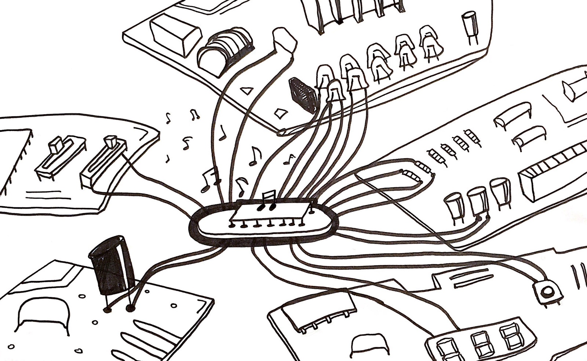

Workshop
DIY E-waste Synthesizer

Program introduction
DIY E-waste Synthesizer aimed to make an analog synthesizer with electronic garbage. Led by researcher, artist and performer Mina Kim, participants joined in exploring and recontextualising the debris from our digital society and its relationship to the environment.
The workshop requires no prior knowledge or skills, but participants will be required to bring e-waste. This can consist of any old or broken electronic devices such as laptops, phones, remote control devices etc.
Workshop flow
Workshop flow
Day 1Monday 05 October
Introducing DIY analog synthesizer
Making basic analog synthesizer
Making variation with e-waste
Playing with your first e-waste instrument
Day 2Tuesday 06 October
Making further variation with different components
Find your favorite combination and finalize your e-waste instruments
E-waste synth orchestra: Play together as an ensemble!